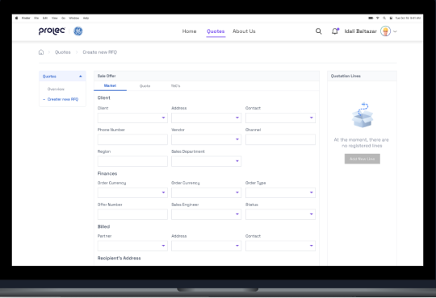
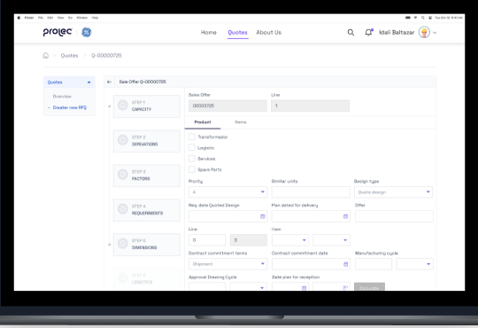
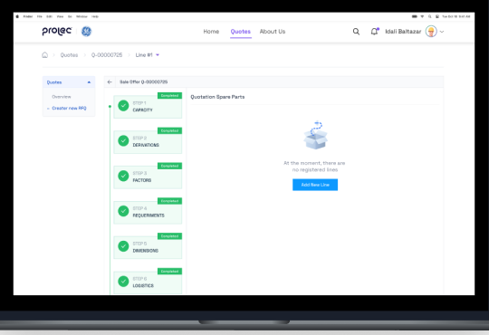
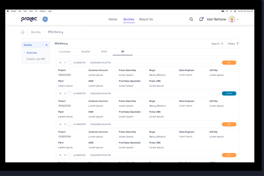
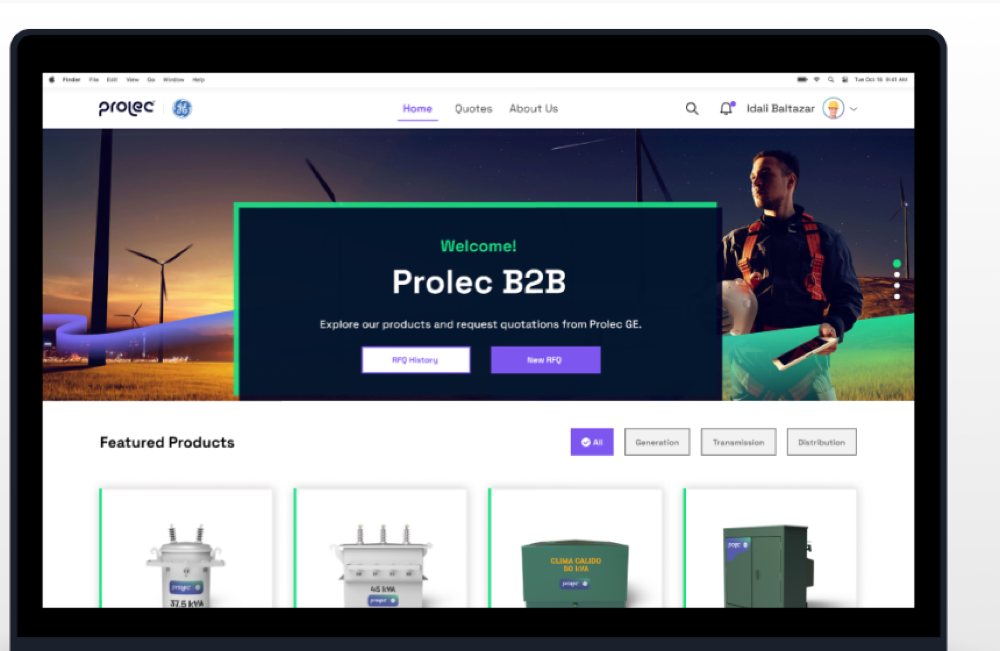

00 · Executive summary2 months
A B2B quotation platform on a Salesforce core for Prolec GE, a transformer manufacturer, to replace quotes sent by WhatsApp, email, and phone with one place to create, validate, and track them.
2mo
From research to final screens
72%
Had trouble creating quotes and managing sales
68%
Of quotes had validation and approval issues
94%
Of employees said quoting became much simpler
Problem
Sales relied on WhatsApp, email, and phone, which was hard for collaborators to manage and control.
Approach
Design thinking over eight weeks: four of UX research, four of UI design and iteration.
Outcome
A guided RFQ flow, validation for both sides, and a history panel to follow every quote to a sale.
Timeline · eight weeksFig. A
Weeks 1–2Weeks 3–4Weeks 5–6Weeks 7–8
Survey · interviews
IA · journey · personas
Wireframes · style guide
Lo-fi → hi-fi · iteration
Step 01 / 05Weeks 1–2
01
Empathize
GoalMeasure how hard quoting really was, with surveys and interviews.
Survey · Google FormsFig. B
YesNo
Did you face difficulties requesting a quote?
85%15%
Were the steps to request a quote clear?
20%80%
Was the platform user-friendly for quotes?
25%75%
Could you easily find the information you needed?
40%60%
Did you find every feature you were looking for?
10%90%
Key findings
INTERFACE
86%
Wanted a more intuitive interface.
DELAY
40%
Delay in completing transactions.
VALIDATION
68%
Of quotes stuck in validation.
SALESFORCE
93%
Believed Salesforce would boost efficiency.
CHALLENGE 01
Sales process
An agile sales management process, with Salesforce integrated.
CHALLENGE 02
Validation
Send quotes for validation by customer and business, and turn approved ones into orders.
CHALLENGE 03
User experience
An intuitive UI to create and customize quotes.
Step 02 / 05Weeks 3–4
02
Define
GoalDesign for both sides: buyers who request quotes and sellers who manage them.
M
Matthew, 45CEO · factory in Mexico City
- Pain
- Rising energy costs; B2B quoting tools are hard to use.
- Needs
- Detailed product info, energy-efficient options, and expert support.
M
Melissa, 34Seller · Prolec customer service
- Pain
- No updated account info; follow-up scattered across WhatsApp and email.
- Needs
- One customer platform and efficient communication tools.
Journey · from login to organized quotesFig. C
LOGINMotivated, checks notifications.
OVERVIEWImpatient with pending quotes.
CREATEAnxious with many details.
CONFUSEDRequirements and contacts.
REVIEWComfortable verifying.
LISTSSatisfied and organized.
Key opportunityQuote creation was the low point: dropdowns, clear steps, and quick previews could turn anxiety into confidence.
Step 03 / 05Week 5
03
Ideate
GoalStructure the RFQ into clear steps, from the client to the sales offer.
User flow · create a quoteFig. D
MarketClient info · finance · billed · recipient's address
QuoteQuotation · plan
T&C'sTerms and conditions
Sales offer →CapacityDerivationsFactorsRequirementsDimensionsLogisticsServicesCreate
Information architectureFig. E
Login/Sign up→Home
HomeRFQ historyCreate RFQFeatured products
QuotesOverview: quotation, project, account, buyer…Create RFQ: market, quote, T&C's
HistoryQuoted · draftedSearch · filtersQuote details in list
About usEthosCulture
Step 04 / 05Weeks 6–8
04
Prototype
GoalKeep the brand's look and feel while making a dense, technical form easy to complete.
What we did
- Wireframes for home, RFQ creation in three tabs, and the step-by-step sales offer.
- Style guide to keep the brand consistent and cohesive.
- Lo-fi to hi-fi prototypes, with an iteration round.
- States for errors, pending, and incomplete fields, so nothing gets overlooked.
Style#835CDD#07E981Space Grotesk

Step 05 / 05Week 8
05
Final screens
GoalGuide users from the first field to a tracked quote.
01 · REGISTER
Easy quote register
Fill in the required fields and you're ready to generate quotation lines.
02 · STEPS
Control from start to end
Dropdowns, checkboxes, and six clear steps for all the technical data.

03 · STATES
Almost done
Precise instructions per field, plus error, pending, and incomplete states.

04 · HISTORY
Ready
Manage every quote from one panel: finish, search, filter, or verify.

06 · ResultsEmployee feedback
06
Quoting, simplified
Outcome94% of employees said creating, managing, and sending quotes had become significantly simpler.
94%
Of Prolec employees
Found quoting significantly simpler
From scattered messages to one platform where quotes are created, validated, and tracked into sales.
Evidence
Home RFQ Sales offer History

Next case · 12 / 21ABInBev
→